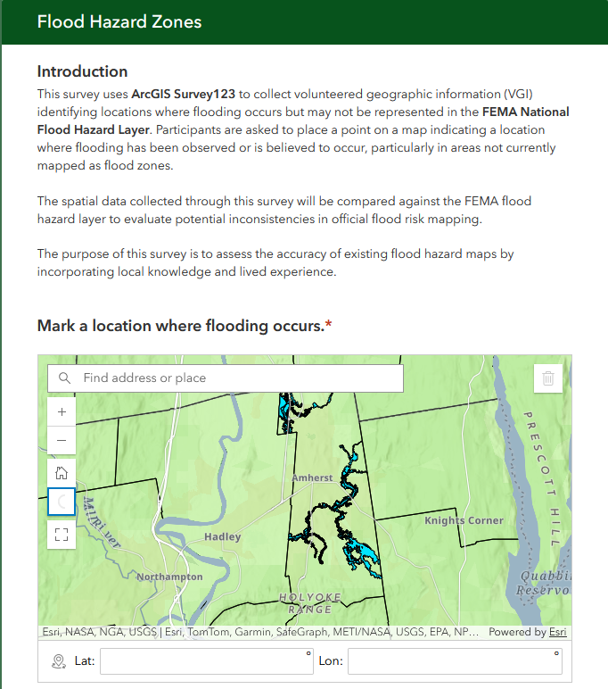
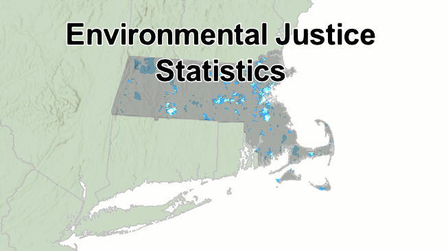
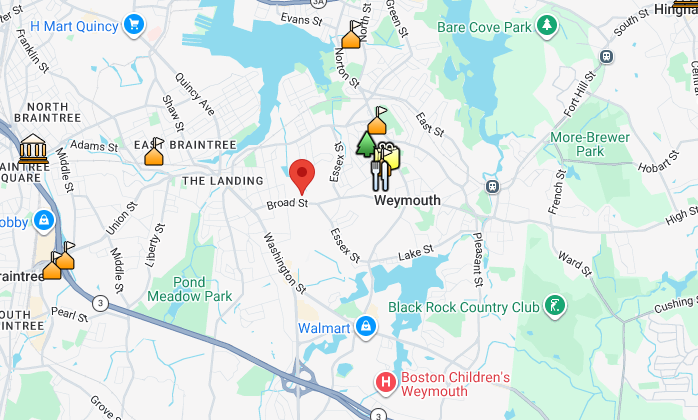

This portfolio showcases interactive Web GIS applications developed using ArcGIS Online, Survey123, and JavaScript-based mapping tools. Each project demonstrates spatial analysis, cartographic design, and user-focused interactivity, with revisions based on feedback and design improvements.

A Survey123 application designed to collect user-reported flood locations using an interactive geospatial survey interface.

An ArcGIS Online web map analyzing environmental justice populations and infrastructure access using layered spatial data.
Removed redundant information from pop-ups. Adjusted layer naming. Improved clarity of township and minority class designations. Enhanced legend readability and data sourcing.

A Google Maps JavaScript API project featuring interactive markers, categorized locations, and dynamic pop-up windows.
Improved marker consistency, expanded dataset, added legend, and enhanced UI readability.